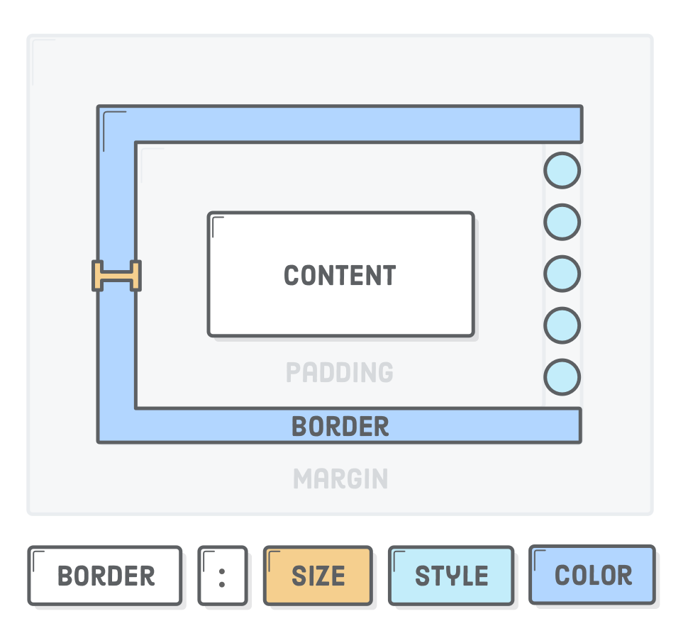

Геометрия элемента
В геометрии элемента есть 4 стороны: верх (top), право (right), низ (bottom) и
лево (left). Именно в таком порядке, по часовой стрелке начиная с верха,
задаются значения составных свойств padding, margin и border.
Свойство padding

Составное свойство, контролирующее внутренние поля между контентом и рамкой, для всех сторон элемента. Результат работы зависит от количества значений свойства.
/* Одинаковые поля по 20px со всех сторон */
padding: 20px;
/* Поля сверху и снизу по 10px, слева и справа по 20px */
padding: 10px 20px;
/* Поле сверху 10px, слева и справа по 20px, снизу 5px */
padding: 10px 20px 5px;
/* Поле сверху 10px, справа 15px, снизу 20px, слева 25px */
padding: 10px 15px 20px 25px;
Также есть свойства для задания полей каждой стороны отдельно.
padding-top: 20px;
padding-right: 10px;
padding-bottom: 15px;
padding-left: 30px;
Поля (падинги) используются для декоративных эффектов. Например для создания свободного пространства между рамкой элемента и его контентом, как в примере. Если не задать падинг, то текст будет некрасиво прилегать к границе абзаца.
В примере свойства рамки не указаны явно, но она всё равно есть. По умолчанию её
ширина равна 0px и она учавствует в построении геометрии элемента, поэтому
можно задать поле между ней и контентом.
Свойство margin
Составное свойство контролирующее внешние отступы от рамки для всех сторон элемента. Результат работы зависит от количества значений свойства.
/* Одинаковые отступы по 20px со всех сторон */
margin: 20px;
/* Отступ сверху и снизу по 10px, слева и справа по 20px */
margin: 10px 20px;
/* Отступ сверху 10px, слева и справа по 20px, снизу 5px */
margin: 10px 20px 5px;
/* Отступ сверху 10px, справа 15px, снизу 20px, слева 25px */
margin: 10px 15px 20px 25px;
Также есть свойства для задания отступов каждой стороны отдельно.
margin-top: 20px;
margin-right: 10px;
margin-bottom: 15px;
margin-left: 30px;
Внешние отступы используются для создания зазора между двумя соседними элементами. В примере у каждого элемента карточки есть разноцветная рамка, поэтому видно, что между ними есть отступы.
При использовании падингов для создания зазоров, элементы будут плотно прилегать друг к другу рамками, без зазора. Если у элемента не задан цвет рамки или фона, визуально определить правильно ли сделаны отступы невозможно, нужно открывать инструменты разработчика.
Схлопывание вертикальных отступов
Вертикальные отступы соседних блочных элементов не складываются, а выбирается наибольший из двух. Схлопывание отступов выполняется только для блочных элементов в нормальном потоке документа.

<div class="box top"></div>
<div class="box bottom"></div>
Дадим верхнему блоку нижний отступ в 20px, а нижнему блоку верхний отступ в
40px. Из-за схлопывания, отступ между ними будет 40px, потому что выбирается
больший из двух.
.box {
width: 200px;
height: 100px;
}
.top {
margin-bottom: 20px;
background-color: teal;
}
.bottom {
margin-top: 40px;
background-color: palevioletred;
}
Выпадение вертикальных отступов
Вертикальный отступ вложенного блока выпадает из родительского и отталкивает обоих от соседа. Если у родительского элемента также был задан верхний отступ, то выберется наибольшее из значений.

<div class="outer-box">
<div class="inner-box"></div>
</div>
В примере мы задаём верхний отступ в 40px для div.inner-box, а в результате
отодвинется не он сам от верха div.outer-box, а весь div.outer-box от края
экрана.
.outer-box {
width: 200px;
height: 200px;
background-color: teal;
}
.inner-box {
width: 100px;
height: 100px;
margin-top: 40px;
background-color: palevioletred;
}
Верхние и нижние отступы на стыке с блоком-родителем как будто пробивают его и выпадают наружу, это одна из самых частых ошибок вёрстки. Делайте отступы только между двумя соседними элементами.
Свойство border
Составное свойство контролирующее ширину, стиль и цвет рамки (границы) элемента.
border: ширина стиль цвет;
Также есть свойства для того, чтобы задать эти значения по отдельности.
border-width: ширина;
border-style: стиль;
border-color: цвет;
Стилей рамок много, самые популярные значения это solid, dashed и dotted.
.box {
width: 100px;
height: 100px;
border: 5px solid tomato;
}
Индивидуальные рамки
Можно задать индивидуальные стили рамке с каждой стороны элемента. Формат имени
свойства простой - border-сторона-свойство: значение.
.box {
/* Установит стили верхней рамки */
border-top-width: 3px;
border-top-style: solid;
border-top-color: blue;
/* Установит стили правой рамки */
border-right-width: 5px;
border-right-style: dotted;
border-right-color: black;
/* Установит стили нинжней рамки */
border-bottom-width: 7px;
border-bottom-style: dashed;
border-bottom-color: palevioletred;
/* Установит стили левой рамки */
border-left-width: 9px;
border-left-style: dashed;
border-left-color: green;
}
Закруглённая рамка
Для того чтобы скруглить все углы рамки есть составное свойство border-radius.
Значением могут быть как абсолютные так и относительные единицы.
Следующие свойства позволяют скруглить каждый угол рамки по отдельности.
/* верхний левый угол */
border-top-left-radius: значение;
/* верхний правый угол */
border-top-right-radius: значение;
/* нижний правый угол */
border-bottom-right-radius: значение;
/* нижний левый угол */
border-bottom-left-radius: значение;